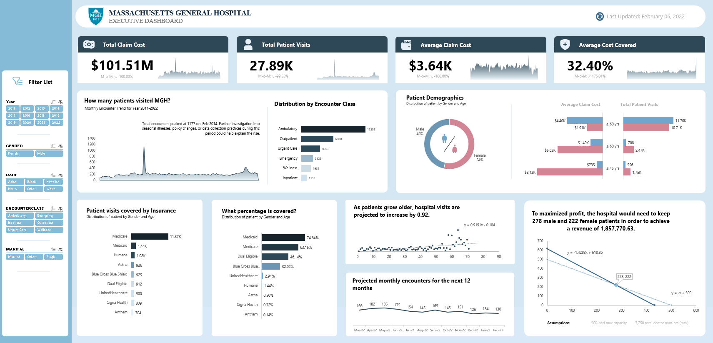

Analyzes hospital patient visits, claim costs, and demographics
to support data-driven healthcare decisions.
Overview
This Excel-built executive dashboard delivers a comprehensive view of Massachusetts General Hospital's patient operations across 11 years — tracking $101.51M in total claim costs, 27.89K patient visits, and insurance coverage patterns across demographics, encounter types, and payer mix. Designed for hospital administrators and financial leadership, it combines descriptive reporting, demographic analysis, and predictive modeling to support strategic decisions around patient capacity, revenue maximization, and cost management. The dashboard transforms a decade of clinical and financial data into a single, executive-ready intelligence tool.
Business Question
Hospital administrators managing large patient volumes face a persistent challenge: understanding not just how many patients were seen, but who they are, what it costs, who is paying, and what the future looks like. Without consolidated visibility into encounter trends, insurance coverage gaps, demographic cost differences, and projected demand, resource planning and revenue strategy rely on intuition rather than data. With only 32.40% of average claim costs covered by insurance, MGH needed a clear picture of where financial risk is concentrated and how to optimize patient mix for maximum revenue.
Key Insights & Features
- Core KPIs Tracked
-
Total Claim Cost ($101.51M), Total Patient Visits (27.89K), Average Claim Cost ($3,640), and Average Cost Covered (32.40%) — each with month-over-month variance indicators built into sparkline trend cards for instant directional awareness.
- Encounter Class Distribution
-
A horizontal bar chart breaks down 27.89K visits across six encounter types — Ambulatory leading at 12,537, followed by Outpatient (6,300), Urgent Care (3,666), Emergency (2,322), Wellness (1,931), and Inpatient (1,135) — enabling resource allocation decisions by care setting.
- Patient Demographics & Cost Analysis
-
A gender donut chart (54% Female, 46% Male) paired with a dual-axis bar chart reveals that patients aged 45 and under carry the highest average claim cost ($8.13K) despite lower visit volume — a counterintuitive finding with direct implications for insurance negotiation and capacity planning.
- Insurance Payer Mix & Coverage Analysis
-
Medicare dominates patient visits at 11.37K, while Medicaid leads coverage percentage at 74.64% — giving financial teams a clear view of which payer relationships drive the most cost burden.
- Predictive Modeling — Two Forecasts Built in Excel
-
A linear regression model projects hospital visits to increase by 0.92 per year as the patient population ages, with monthly encounter projections for the next 12 months (Mar 2022–Feb 2023). A separate linear optimization model identifies that retaining 278 male and 222 female patients maximizes revenue at $1,857,770.63 — given a 500-bed capacity and 3,750 total doctor man-hours.
- Interactivity & Filters
-
Year (2011–2022), Gender, Race, Encounter Class, and Marital Status slicers enable fully customizable cross-sectional analysis — allowing any stakeholder to slice the entire dashboard to their specific patient segment or time period.

| Tool | Usage |
|---|---|
| Microsoft Excel | Full dashboard design, layout, and interactivity |
| Excel Pivot Tables | Data aggregation, KPI summarization, city-level breakdowns |
| Excel Charts & Graphs | Line chart, bar chart, donut chart, scorecard table |
| Excel Slicers & Filters | Interactive city, room type, price range, and host attribute filters |
| Data Modeling | Structured data tables with relational filtering logic |
Impact & Value
This dashboard goes well beyond standard hospital reporting by embedding two predictive models — a demand forecast and a revenue optimization model — directly inside Excel, without any external tools. The optimization finding alone (278 male / 222 female patient mix yielding $1.86M in maximum revenue) gives hospital leadership a concrete, data-backed target for capacity planning and patient intake strategy. By surfacing that under-45 patients carry the highest average claim cost and that most insurers cover less than half of total costs, the dashboard creates a financial risk map that administrators can act on immediately. For a portfolio, this project demonstrates that Excel can be used for serious analytical work — including regression modeling and constrained optimization — not just charts and tables.
Let's Work Together!
I help businesses turn raw data into actionable insights, dashboards, and data-driven strategies.
- Data Analysis & Visualization
- Power BI & Dashboard Development
- Business Intelligence Solutions
Phone
+63 956-175-9646Address
Bacolod City, Negros OccidentalPhilippines